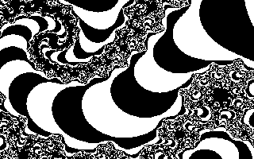

1.2.5.3 Фрактальная графика
Слово фрактал образовано от латинского fractus и в переводе означает состоящий из фрагментов. Оно было предложено Бенуа Мандельбротом в 1975 г. для обозначения нерегулярных, но самоподобных структур, которыми он занимался. Фрактальными свойствами обладают многие объекты живой и неживой природы, обычная снежинка, многократно увеличенная, оказывается фрактальным объектом. Фрактальные алгоритмы лежат в основе роста кристаллов и растений.
Например, взглянув на ветку папоротникового растения, вы увидите, что каждая дочерняя ветка во многом повторяет свойства ветки более высокого уровня. В отдельных ветках деревьев чисто математическими методами можно проследить свойства всего дерева. А если ветку поставить в воду, то вскоре можно получить саженец, который со временем разовьется в полноценное дерево.
Способность фрактальной графики моделировать образы живой природы вычислительным путем часто используют для автоматической генерации необычных иллюстраций, создания узоров в текстильной промышленности и т. п.

Рисунок 1 - Пример фрактальной графики
Программные средства для работы с фрактальной графикой предназначены ддм автоматической генерации изображений путем математических расчетов. Создание фрактальной художественной композиции состоит не в рисовании или оформлении, а в программировании.